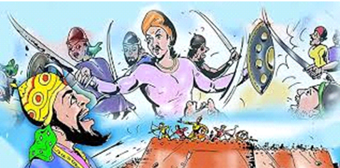

Gora and Badal : "Whose head is cut, yet the torso continues to fight the enemies
Introduction
The holy land of Mewar has given birth to many great and brave, mighty warriors. Gora and Badal are among
those brave warriors and the Earth will always be grateful to them!
Gora was the commander of the then Chittor and Badal was his nephew. Both were extremely brave and mighty
warriors. Their enemies were afraid of their courage, strength, and efforts. Gora and Badal were among the
few fighters in history who possessed muscle as well as sharp intellect.
They were among the great warriors of Chittorgarh Mewar who fought valiantly for the rescue of Rawal Ratan
Singh of Chittorgarh Mewar.
Story:-
Ratan Singh's queen Padmini was uniquely beautiful. The fame of her beauty was spread far and wide. Hearing
of her beauty, the then Delhi emperor Alauddin Khilji became elated to find Padmini and ascended the Chittor
fort with a huge army to find the queen. He laid siege to the fort of Chittor for several months, but due to
the indomitable courage and valor of the Rajput soldiers posted for the defense of Chittor, he could not
enter the fort of Chittor. Then he planned to act diplomatically and sent his messenger to Chittor - "We
want to befriend you, I have heard a lot about the beauty of the queen, so just let me meet her only once".
Ratan Singh became furious upon hearing the message, as it was against the royal
traditions. But Rani Padmini, while presenting foresight on this occasion, explained to the king that "For
such a small reason, it is not wise to shed blood of thousands of soldiers Chittor in vain”. The queen was
rather more worried about Mewar than herself. She did not want the entire Mewar kingdom to suffer as a
result of the denial of Alauddin’s proposal. Mewar’s army was very small in front of the Khilji army.
Pondering over the situation, they came up with an idea to let Alauddin see Rani Padmini’s face as a
reflection in a lake. Ratan Singh welcomed Alauddin to the fort of Chittor as a guest. Rani Padmini's palace
was in the middle of the lake, so a big mirror was placed on the wall. The queen was placed in front of the
mirror. Through the window, the image of the queen's face was visible in the water of the lake. From there,
Alauddin was allowed to see the queen. Alauddin was amazed after seeing her beauty in the water of the lake
and thought of tricking the king to acquire queen Padmini. When Ratan Singh came to see off Alauddin at the
fort gate, Alauddin betrayed his soldiers and arrested Rana by deceit.
After imprisoning Ratan Singh, Alauddin proposed that he would free the king only after the Queen was handed
over to him. Belonging to a royal family, Rani Padmini was well acquainted with the knowledge of politics.
After all this, Rani Padmini organized a war council in which a plan was made to save Rawal Ratan Singh.
Gora and Badal were given the responsibility to save Rawal Ratan Singh. So she, along with the ministers
decided to reply diplomatically and sent a message to Alauddin stating that "I, the Queen of Mewar with
seven hundred of my maids will arrive before you. If you accept my condition, please inform me”. Having
received such a message from the queen, the sensual Alauddin was not happy but was eager to get that
wonderful beautiful queen. So, he blindly accepted all the conditions as listed by the queen in the letter.

All the palanquins stopped near Alauddin's camp and Rajput Veer came out of his base and suddenly broke down
on the Yavan army. In such a sudden attack, Alauddin's army was left surprised and Gora Badal prepared to
free Rana Ratan Singh from Alauddin's imprisonment. These were the warriors who went to Delhi and rescued
Rana Ratan Singh from Khilji's captivity. By this time, when Gora killed Khilji's commander, his own head
had already been cut, with only the torso remaining. Badal successfully transported the king to the fort of
Chittor. Alauddin was greatly embarrassed by this defeat and he now decided to conquer Chittor.
At the time, Badal was only twelve years old, as described by a songwriter.
After this defeat, Khilji laid siege of Chittor Fort on all sides. All gates remained closed. This continued
till August(started in January). The stored food items were all exhausted. On 26th August, 1303, Ratan Singh
with his army, donning saffron turbans, made a suicide attack against the enemies. Their goal was to defend
or die. Not following the battle rules, Khilji killed Rana Ratan Singh.With the death of their king, the
Rajputs eventually lost the battle.
Alauddin Khilji rushed towards the fiort of Rani Padmini. A huge pyre was lit within the fort, following
Rani Padmini's orders. Rani Padmini and her companions,to save their honor, rather than being dishonored in
the cruel enemy's hands, jumped into the pyre, performing Jauhar. Around 74,500 Rajput women perished in the
flames.
Khilji and his troops entered the fort only to be confronted with ashes of the bodies of the chivalrous
Rajput women. Performing Jauhar, they perished but remained immortal in History and folklores.
The story of Gora Badal has been depicted on a wall painting in Eking ji temple in Udaipur. Two dome shaped
houses have been constructed in their name known as Gora-Badal Mahal, south of Padmini Mahal, in Chittor
Fort.